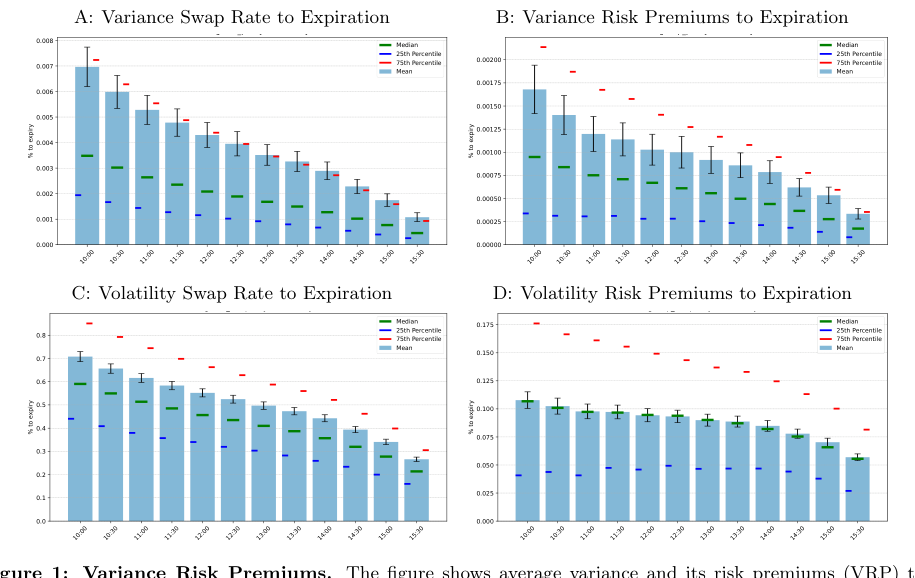
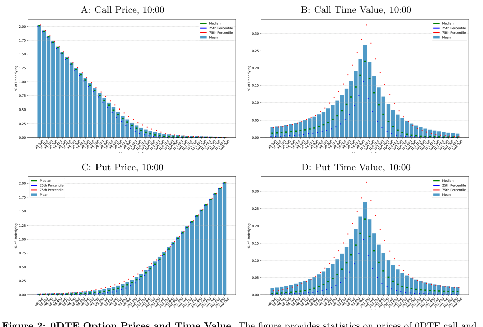

บท 0003: Variance Risk Premium แบบไม่ใช้สูตร
นี่คือจุดที่ paper อาจทำให้สับสน: มี premium บวกจริง แต่ไม่ได้แปลว่าเป็น edge ที่กินง่าย
1. เปรียบเหมือนขายประกันความแกว่ง
ถ้าคุณขายประกัน คุณรับ premium ก่อน แล้วจ่ายเงินเมื่อเกิดเหตุร้าย
การขาย variance ก็คล้ายกัน: คุณรับ time value ของ option หลาย strike แต่ถ้าตลาดแกว่งแรงมาก คุณต้องจ่าย payoff ตอนหมดอายุ
ตลาดนิ่งกว่าที่ option price คิด
ผู้ขาย variance เก็บ premium ได้มากกว่า payoff ที่ต้องจ่าย
ตลาดแกว่งแรงกว่าที่ option price คิด
ผู้ขาย variance ต้องจ่าย payoff มาก และอาจขาดทุนหนัก
2. แล้ว paper พบอะไร
paper พบว่าใน sample 09/2016 ถึง February 2, 2026, 0DTE variance risk premium เป็นบวกและ statistically significant
แปลว่าโดยเฉลี่ย implied variance สูงกว่า realized variance แต่ paper รีบเตือนทันทีว่า economic magnitude เล็กมากในช่วง same-day horizon

3. ทำไม positive แต่ monetize ยาก
เพราะ 0DTE เหลือเวลาแค่ไม่กี่ชั่วโมง time value ของ OTM options จึงเล็กมาก ผู้เขียนบอกว่า median realized VRP จาก 10:00 ถึง expiry ประมาณ 0.0011% ของ underlying
0.0011% ของ underlying คือเล็กมากเมื่อเทียบกับ bid/ask spread, slippage, fees และวันที่ตลาดวิ่งแรงผิดคาด

4. ข้อผิดพลาดที่ต้องเลี่ยง
อย่าสรุปว่า "VRP บวก ดังนั้นขาย 0DTE options ทุกวันดี" นั่นไม่ใช่ conclusion ของ paper
paper ใช้ VRP เป็นจุดเริ่มต้น แล้วค่อยถามต่อว่า actual option strategies หลัง friction และ tail risk ยังน่าสนใจไหม
5. Retrieval
VRP บวกหมายถึงอะไร?
หมายถึง implied variance สูงกว่า realized variance โดยเฉลี่ยใน sample
ทำไม VRP บวกไม่ใช่ free money?
เพราะ premium เล็ก ต้องเสีย execution costs และมี tail risk จากวันที่ตลาดแกว่งแรง
paper ใช้ VRP เป็นคำตอบสุดท้ายหรือเป็นจุดเริ่มต้น?
เป็นจุดเริ่มต้น เพื่อถามต่อว่า strategy ที่ implement ได้จริงยังน่าสนใจไหม
ต่อไป: 0004 Strategy Templates